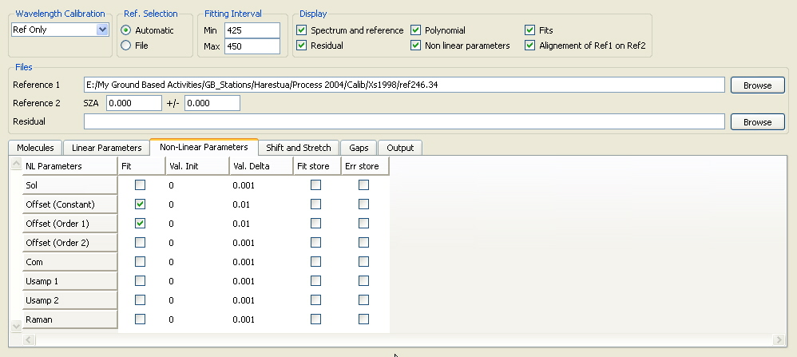

QDOAS Analysis Windows properties : Non-Linear Parameters page

This page proposes different parameters that can be fitted non linearly :
- scaling factor for the control spectrum (Sol)
- offset
- common residuals (Com)
- undersampling (Usamp1 and Usamp2)
- Raman effect
Still in construction.